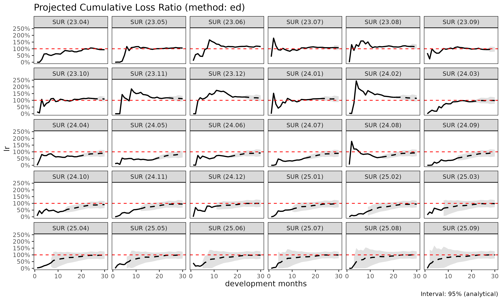
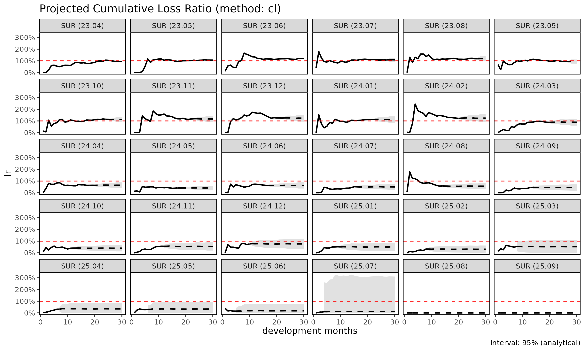

Loss-ratio projection methods: SA, ED, CL
Source:vignettes/loss-ratio-methods.Rmd
loss-ratio-methods.Rmdfit_lr() projects cumulative loss ratio per cohort from
a Triangle object. Three methods are available; this
vignette explains the trade-offs.
Notation
For cohort at dev :
- — cumulative loss
- — cumulative risk premium (exposure)
- — age-to-age (chain ladder) factor
- — exposure-driven intensity
- maturity point — dev at which stabilises for group (detected from CV / RSE thresholds)
Method 1: Stage-Adaptive ("sa", default)
The default method exploits the fact that is volatile early and stable late, while behaves the opposite way. SA switches estimators at the maturity point:
Behaviour:
- Before maturity: anchors the loss estimate to premium volume. Avoids the volatile-link explosion that classical CL suffers when early are noisy.
- After maturity: preserves the cohort’s own observed level. Avoids the “all cohorts converge to the average” behaviour that pure ED suffers in the tail.
When to use:
- Long-tail products where development extends across many years.
- Recent cohorts (immature data) mixed with older cohorts (matured).
- Health insurance cohorts with structural pre-/post-maturity difference (e.g. waiting period transitions).
library(lossratio)
data(experience)
exp <- as_experience(experience)
tri <- build_triangle(exp[cv_nm == "SUR"], group_var = cv_nm)
lr_sa <- fit_lr(tri, method = "sa") # default
plot(lr_sa, type = "lr")
summary(lr_sa)
#> cv_nm cohort latest ultimate reserve exposure_ult lr_latest
#> <char> <Date> <num> <num> <num> <num> <num>
#> 1: SUR 2023-04-01 2442597048 2442597048 0 2621263715 0.93183949
#> 2: SUR 2023-05-01 2423543638 2600462324 176918686 2447179856 1.06560740
#> 3: SUR 2023-06-01 3211045460 3634951626 423906166 3045660787 1.19909110
#> 4: SUR 2023-07-01 2552396709 3106052713 553656004 2859002910 1.08237572
#> 5: SUR 2023-08-01 2472997706 3159902325 686904619 2669412392 1.18159391
#> 6: SUR 2023-09-01 2014222417 2712676349 698453932 2893769135 0.95080886
#> 7: SUR 2023-10-01 2422172254 3464336723 1042164469 3094707504 1.14505029
#> 8: SUR 2023-11-01 2157147612 3350616805 1193469193 2879458974 1.18696133
#> 9: SUR 2023-12-01 2062030017 3510350121 1448320104 2843155654 1.24103978
#> 10: SUR 2024-01-01 1803809914 3316423447 1512613533 2974323108 1.11558443
#> 11: SUR 2024-02-01 1627213157 3293904272 1666691115 2661467254 1.22363541
#> 12: SUR 2024-03-01 1006624213 2212909862 1206285649 2483209943 0.88837590
#> 13: SUR 2024-04-01 707083237 1712964993 1005881756 2676093339 0.63405399
#> 14: SUR 2024-05-01 398857325 1069653556 670796231 2650183003 0.40197017
#> 15: SUR 2024-06-01 558855276 1654603718 1095748442 2653104690 0.62898298
#> 16: SUR 2024-07-01 423131371 1378042306 954910935 2758730502 0.51295338
#> 17: SUR 2024-08-01 457705980 1642689597 1184983617 2949332087 0.58596112
#> 18: SUR 2024-09-01 278007651 1166380310 888372659 2628969714 0.45517867
#> 19: SUR 2024-10-01 214811381 1027414214 812602833 2600171974 0.40289870
#> 20: SUR 2024-11-01 251273971 1400108561 1148834590 2558267999 0.56379157
#> 21: SUR 2024-12-01 322678179 2168358632 1845680453 2865484259 0.76337614
#> 22: SUR 2025-01-01 179253475 1403314539 1224061064 2811568885 0.51475151
#> 23: SUR 2025-02-01 100816665 1246593088 1145776423 3116396285 0.32204866
#> 24: SUR 2025-03-01 111279087 1859420120 1748141033 2859035735 0.48317257
#> 25: SUR 2025-04-01 55914454 1706798346 1650883892 2820900062 0.31249884
#> 26: SUR 2025-05-01 41578391 2113613662 2072035271 3170694661 0.27248380
#> 27: SUR 2025-06-01 14997314 1815491007 1800493693 2746665555 0.14942419
#> 28: SUR 2025-07-01 6232031 2701876633 2695644602 3705336068 0.07318336
#> 29: SUR 2025-08-01 0 2250325450 2250325450 2969197182 0.00000000
#> 30: SUR 2025-09-01 0 2371913171 2371913171 2995415555 0.00000000
#> cv_nm cohort latest ultimate reserve exposure_ult lr_latest
#> <char> <Date> <num> <num> <num> <num> <num>
#> lr_ult maturity_from proc_se param_se se cv
#> <num> <num> <num> <num> <num> <num>
#> 1: 0.9318395 9 0.0 0.0 0.0 0.0000000000
#> 2: 1.0626364 9 270023.8 278555.7 387951.2 0.0001491855
#> 3: 1.1934854 9 461673.6 481436.4 667025.8 0.0001835034
#> 4: 1.0864112 9 217960839.6 130390124.6 253985259.7 0.0817710719
#> 5: 1.1837445 9 235800277.9 139803599.9 274129198.7 0.0867524279
#> 6: 0.9374198 9 230925350.1 124174149.3 262194082.1 0.0966551289
#> 7: 1.1194391 9 276909538.1 163800531.1 321728932.9 0.0928688400
#> 8: 1.1636272 9 347646646.1 180286627.2 391613915.1 0.1168781564
#> 9: 1.2346669 9 379204803.4 195291838.6 426538609.2 0.1215088508
#> 10: 1.1150179 9 371903391.7 185291186.8 415505663.8 0.1252872772
#> 11: 1.2376272 9 406210629.2 191768888.6 449201938.9 0.1363737078
#> 12: 0.8911489 9 348109439.7 131371151.5 372073328.0 0.1681375886
#> 13: 0.6400991 9 316686848.8 103164315.5 333066714.3 0.1944387163
#> 14: 0.4036150 9 262671178.8 65778222.8 270782057.7 0.2531493082
#> 15: 0.6236481 9 342800640.3 103939643.9 358211848.8 0.2164940432
#> 16: 0.4995205 9 336548946.6 89486750.7 348242834.9 0.2527083771
#> 17: 0.5569700 9 387322897.0 109347246.8 402462230.4 0.2450019962
#> 18: 0.4436644 9 360265104.1 81491440.0 369366755.4 0.3166778043
#> 19: 0.3951332 9 358796880.9 74015042.1 366351509.1 0.3565762514
#> 20: 0.5472877 9 451728990.6 105050619.0 463783045.7 0.3312479179
#> 21: 0.7567163 9 619598522.3 171876903.1 642996110.9 0.2965358689
#> 22: 0.4991215 9 523388251.8 114399770.9 535744873.7 0.3817710561
#> 23: 0.4000111 9 701160983.1 151966055.9 717440176.1 0.5755207396
#> 24: 0.6503662 9 1008915827.7 229980336.9 1034795681.6 0.5565152653
#> 25: 0.6050545 9 1022367650.8 226433230.3 1047142598.3 0.6135127800
#> 26: 0.6666090 9 1151829299.7 274237738.8 1184025790.7 0.5601902618
#> 27: 0.6609800 9 1079112766.9 238225282.2 1105095312.1 0.6087032698
#> 28: 0.7291853 9 1349660358.1 349060403.8 1394068236.4 0.5159629494
#> 29: 0.7578902 9 1225790727.8 285878838.0 1258685671.0 0.5593349490
#> 30: 0.7918478 9 1250626904.3 295553950.3 1285075792.0 0.5417887162
#> lr_ult maturity_from proc_se param_se se cv
#> <num> <num> <num> <num> <num> <num>
#> se_lr cv_lr ci_lower ci_upper
#> <num> <num> <num> <num>
#> 1: 0.0000000000 0.0000000000 0.9318395 0.9318395
#> 2: 0.0001585299 0.0001491855 1.0623257 1.0629471
#> 3: 0.0002190086 0.0001835034 1.1930561 1.1939146
#> 4: 0.0888370064 0.0817710719 0.9122938 1.2605285
#> 5: 0.1026927123 0.0867524279 0.9824705 1.3850186
#> 6: 0.0906064271 0.0966551289 0.7598344 1.1150051
#> 7: 0.1039610149 0.0928688400 0.9156793 1.3231990
#> 8: 0.1360026028 0.1168781564 0.8970670 1.4301874
#> 9: 0.1500229537 0.1215088508 0.9406273 1.5287065
#> 10: 0.1396975543 0.1252872772 0.8412157 1.3888201
#> 11: 0.1687798105 0.1363737078 0.9068249 1.5684296
#> 12: 0.1498356307 0.1681375886 0.5974765 1.1848214
#> 13: 0.1244600513 0.1944387163 0.3961619 0.8840363
#> 14: 0.1021748526 0.2531493082 0.2033559 0.6038740
#> 15: 0.1350161002 0.2164940432 0.3590214 0.8882748
#> 16: 0.1262330027 0.2527083771 0.2521083 0.7469326
#> 17: 0.1364587705 0.2450019962 0.2895158 0.8244243
#> 18: 0.1404986727 0.3166778043 0.1682921 0.7190368
#> 19: 0.1408951072 0.3565762514 0.1189838 0.6712825
#> 20: 0.1812879049 0.3312479179 0.1919699 0.9026054
#> 21: 0.2243935241 0.2965358689 0.3169131 1.1965195
#> 22: 0.1905501503 0.3817710561 0.1256501 0.8725930
#> 23: 0.2302146808 0.5755207396 0.0000000 0.8512236
#> 24: 0.3619387016 0.5565152653 0.0000000 1.3597530
#> 25: 0.3712086835 0.6135127800 0.0000000 1.3326102
#> 26: 0.3734278817 0.5601902618 0.0000000 1.3985142
#> 27: 0.4023406891 0.6087032698 0.0000000 1.4495533
#> 28: 0.3762326036 0.5159629494 0.0000000 1.4665877
#> 29: 0.4239144772 0.5593349490 0.0000000 1.5887473
#> 30: 0.4290141947 0.5417887162 0.0000000 1.6327002
#> se_lr cv_lr ci_lower ci_upper
#> <num> <num> <num> <num>Method 2: Exposure-Driven ("ed")
All future increments use ED:
Behaviour:
- Stable when premium volume is informative across full development.
- Loses the cohort-specific level signal — cohorts with higher observed loss converge toward the group-level .
When to use:
- Short-tail products where chain ladder offers no advantage.
- Sparse data where age-to-age factors are unreliable across all links.
- Comparing against SA / CL for sanity check.

Method 3: Classical Chain Ladder ("cl")
Classical Mack (1993) model:
Behaviour:
- Standard reserving practice. Equivalent to
fit_cl(tri, value_var = "closs")for the loss projection, butfit_lr()additionally projects exposure forward via CL oncrpand computes the loss-ratio uncertainty via the delta method. - Volatile when early are noisy — small denominators amplify link errors.
When to use:
- Mature, stable portfolios where age-to-age factors are well-behaved across the full development.
- Reserving exercises where regulators expect the classical Mack form for documentation.

Comparison
lrs <- list(
sa = fit_lr(tri, method = "sa"),
ed = fit_lr(tri, method = "ed"),
cl = fit_lr(tri, method = "cl")
)
# Cohort-level summary
summary(lrs$sa)$ultimate
#> [1] 2442597048 2600462324 3634951626 3106052713 3159902325 2712676349
#> [7] 3464336723 3350616805 3510350121 3316423447 3293904272 2212909862
#> [13] 1712964993 1069653556 1654603718 1378042306 1642689597 1166380310
#> [19] 1027414214 1400108561 2168358632 1403314539 1246593088 1859420120
#> [25] 1706798346 2113613662 1815491007 2701876633 2250325450 2371913171
summary(lrs$ed)$ultimate
#> [1] 2442597048 2577879721 3551186951 3059824767 3058099572 2775733411
#> [7] 3380150639 3219527669 3285011777 3226229783 3046667388 2439253173
#> [13] 2374720719 2163237459 2420419526 2443351731 2698334323 2374632179
#> [19] 2357924851 2427205865 2836437900 2696982544 2949933197 2797749588
#> [25] 2744104251 3109306345 2691512006 3663214084 2946330551 2985339919
summary(lrs$cl)$ultimate
#> [1] 2442597048 2600462324 3634951626 3106052713 3159902325 2712676349
#> [7] 3464336723 3350616805 3510350121 3316423447 3293904272 2212909862
#> [13] 1712964993 1069653556 1654603718 1378042306 1642689597 1166380310
#> [19] 1027414214 1400108561 2168358632 1403314539 954214626 1488227953
#> [25] 958667529 1041506115 484991215 436725855 0 0Variance and confidence intervals
fit_lr() reports analytical standard errors via the
delta method. Two delta variants:
-
delta_method = "simple"(default) — treats exposure as fixed, . -
delta_method = "full"— accounts for exposure uncertainty and loss-exposure correlationrho:
Bootstrap intervals are also available:
lr_boot <- fit_lr(tri, method = "sa", bootstrap = TRUE, B = 1000, seed = 1)
summary(lr_boot)
#> cv_nm cohort latest ultimate reserve exposure_ult lr_latest
#> <char> <Date> <num> <num> <num> <num> <num>
#> 1: SUR 2023-04-01 2442597048 2442597048 0 2621263715 0.93183949
#> 2: SUR 2023-05-01 2423543638 2600462324 176918686 2447179856 1.06560740
#> 3: SUR 2023-06-01 3211045460 3634951626 423906166 3045660787 1.19909110
#> 4: SUR 2023-07-01 2552396709 3106052713 553656004 2859002910 1.08237572
#> 5: SUR 2023-08-01 2472997706 3159902325 686904619 2669412392 1.18159391
#> 6: SUR 2023-09-01 2014222417 2712676349 698453932 2893769135 0.95080886
#> 7: SUR 2023-10-01 2422172254 3464336723 1042164469 3094707504 1.14505029
#> 8: SUR 2023-11-01 2157147612 3350616805 1193469193 2879458974 1.18696133
#> 9: SUR 2023-12-01 2062030017 3510350121 1448320104 2843155654 1.24103978
#> 10: SUR 2024-01-01 1803809914 3316423447 1512613533 2974323108 1.11558443
#> 11: SUR 2024-02-01 1627213157 3293904272 1666691115 2661467254 1.22363541
#> 12: SUR 2024-03-01 1006624213 2212909862 1206285649 2483209943 0.88837590
#> 13: SUR 2024-04-01 707083237 1712964993 1005881756 2676093339 0.63405399
#> 14: SUR 2024-05-01 398857325 1069653556 670796231 2650183003 0.40197017
#> 15: SUR 2024-06-01 558855276 1654603718 1095748442 2653104690 0.62898298
#> 16: SUR 2024-07-01 423131371 1378042306 954910935 2758730502 0.51295338
#> 17: SUR 2024-08-01 457705980 1642689597 1184983617 2949332087 0.58596112
#> 18: SUR 2024-09-01 278007651 1166380310 888372659 2628969714 0.45517867
#> 19: SUR 2024-10-01 214811381 1027414214 812602833 2600171974 0.40289870
#> 20: SUR 2024-11-01 251273971 1400108561 1148834590 2558267999 0.56379157
#> 21: SUR 2024-12-01 322678179 2168358632 1845680453 2865484259 0.76337614
#> 22: SUR 2025-01-01 179253475 1403314539 1224061064 2811568885 0.51475151
#> 23: SUR 2025-02-01 100816665 1246593088 1145776423 3116396285 0.32204866
#> 24: SUR 2025-03-01 111279087 1859420120 1748141033 2859035735 0.48317257
#> 25: SUR 2025-04-01 55914454 1706798346 1650883892 2820900062 0.31249884
#> 26: SUR 2025-05-01 41578391 2113613662 2072035271 3170694661 0.27248380
#> 27: SUR 2025-06-01 14997314 1815491007 1800493693 2746665555 0.14942419
#> 28: SUR 2025-07-01 6232031 2701876633 2695644602 3705336068 0.07318336
#> 29: SUR 2025-08-01 0 2250325450 2250325450 2969197182 0.00000000
#> 30: SUR 2025-09-01 0 2371913171 2371913171 2995415555 0.00000000
#> cv_nm cohort latest ultimate reserve exposure_ult lr_latest
#> <char> <Date> <num> <num> <num> <num> <num>
#> lr_ult maturity_from proc_se param_se se cv
#> <num> <num> <num> <num> <num> <num>
#> 1: 0.9318395 9 0.0 0.0 0.0 0.0000000000
#> 2: 1.0626364 9 270023.8 278555.7 387951.2 0.0001491855
#> 3: 1.1934854 9 461673.6 481436.4 667025.8 0.0001835034
#> 4: 1.0864112 9 217960839.6 130390124.6 253985259.7 0.0817710719
#> 5: 1.1837445 9 235800277.9 139803599.9 274129198.7 0.0867524279
#> 6: 0.9374198 9 230925350.1 124174149.3 262194082.1 0.0966551289
#> 7: 1.1194391 9 276909538.1 163800531.1 321728932.9 0.0928688400
#> 8: 1.1636272 9 347646646.1 180286627.2 391613915.1 0.1168781564
#> 9: 1.2346669 9 379204803.4 195291838.6 426538609.2 0.1215088508
#> 10: 1.1150179 9 371903391.7 185291186.8 415505663.8 0.1252872772
#> 11: 1.2376272 9 406210629.2 191768888.6 449201938.9 0.1363737078
#> 12: 0.8911489 9 348109439.7 131371151.5 372073328.0 0.1681375886
#> 13: 0.6400991 9 316686848.8 103164315.5 333066714.3 0.1944387163
#> 14: 0.4036150 9 262671178.8 65778222.8 270782057.7 0.2531493082
#> 15: 0.6236481 9 342800640.3 103939643.9 358211848.8 0.2164940432
#> 16: 0.4995205 9 336548946.6 89486750.7 348242834.9 0.2527083771
#> 17: 0.5569700 9 387322897.0 109347246.8 402462230.4 0.2450019962
#> 18: 0.4436644 9 360265104.1 81491440.0 369366755.4 0.3166778043
#> 19: 0.3951332 9 358796880.9 74015042.1 366351509.1 0.3565762514
#> 20: 0.5472877 9 451728990.6 105050619.0 463783045.7 0.3312479179
#> 21: 0.7567163 9 619598522.3 171876903.1 642996110.9 0.2965358689
#> 22: 0.4991215 9 523388251.8 114399770.9 535744873.7 0.3817710561
#> 23: 0.4000111 9 701160983.1 151966055.9 717440176.1 0.5755207396
#> 24: 0.6503662 9 1008915827.7 229980336.9 1034795681.6 0.5565152653
#> 25: 0.6050545 9 1022367650.8 226433230.3 1047142598.3 0.6135127800
#> 26: 0.6666090 9 1151829299.7 274237738.8 1184025790.7 0.5601902618
#> 27: 0.6609800 9 1079112766.9 238225282.2 1105095312.1 0.6087032698
#> 28: 0.7291853 9 1349660358.1 349060403.8 1394068236.4 0.5159629494
#> 29: 0.7578902 9 1225790727.8 285878838.0 1258685671.0 0.5593349490
#> 30: 0.7918478 9 1250626904.3 295553950.3 1285075792.0 0.5417887162
#> lr_ult maturity_from proc_se param_se se cv
#> <num> <num> <num> <num> <num> <num>
#> se_lr cv_lr ci_lower ci_upper
#> <num> <num> <num> <num>
#> 1: 0.0000000000 0.0000000000 0.93183949 0.9318395
#> 2: 0.0001585299 0.0001491855 1.06231740 1.0629663
#> 3: 0.0002190086 0.0001835034 1.19309074 1.1938960
#> 4: 0.0888370064 0.0817710719 0.89969393 1.2541737
#> 5: 0.1026927123 0.0867524279 0.97818455 1.3879857
#> 6: 0.0906064271 0.0966551289 0.76626286 1.1267473
#> 7: 0.1039610149 0.0928688400 0.91331875 1.3156194
#> 8: 0.1360026028 0.1168781564 0.90714734 1.4490470
#> 9: 0.1500229537 0.1215088508 0.98027936 1.5409842
#> 10: 0.1396975543 0.1252872772 0.84691340 1.4123250
#> 11: 0.1687798105 0.1363737078 0.92601861 1.5489912
#> 12: 0.1498356307 0.1681375886 0.61752968 1.2146931
#> 13: 0.1244600513 0.1944387163 0.41821930 0.8831612
#> 14: 0.1021748526 0.2531493082 0.21972719 0.6248022
#> 15: 0.1350161002 0.2164940432 0.37829007 0.8920031
#> 16: 0.1262330027 0.2527083771 0.28234007 0.7789597
#> 17: 0.1364587705 0.2450019962 0.29847464 0.8534440
#> 18: 0.1404986727 0.3166778043 0.19779539 0.7336469
#> 19: 0.1408951072 0.3565762514 0.13578428 0.6987881
#> 20: 0.1812879049 0.3312479179 0.24172873 0.9484988
#> 21: 0.2243935241 0.2965358689 0.38776384 1.2553205
#> 22: 0.1905501503 0.3817710561 0.17446276 0.8839768
#> 23: 0.2302146808 0.5755207396 0.03859163 0.9079461
#> 24: 0.3619387016 0.5565152653 0.03530500 1.4511574
#> 25: 0.3712086835 0.6135127800 0.00000000 1.4196067
#> 26: 0.3734278817 0.5601902618 0.02557286 1.5128473
#> 27: 0.4023406891 0.6087032698 0.00000000 1.5760689
#> 28: 0.3762326036 0.5159629494 0.11075059 1.5787469
#> 29: 0.4239144772 0.5593349490 0.00000000 1.6643254
#> 30: 0.4290141947 0.5417887162 0.05281718 1.7271721
#> se_lr cv_lr ci_lower ci_upper
#> <num> <num> <num> <num>Choosing a method
SA combines ED before the maturity point with CL after, so
"sa" is the natural default. "cl" and
"ed" are special cases that apply only when one of SA’s two
regions becomes redundant.
Default is "sa" — ED before maturity, CL after.
Pick "cl" or "ed" only as special cases:
├── All cohorts are already past maturity
│ → "cl" (no ED region, so SA reduces to CL)
└── Loss development is unstable across all dev and exposure (rp) is
the more reliable signal
→ "ed" (CL region is better served by exposure)In practice: start with "sa" (the
default), then run "cl" and "ed" for
sensitivity. If all three agree, the projection is robust. If they
diverge, inspect maturity detection and the underlying ata factors.